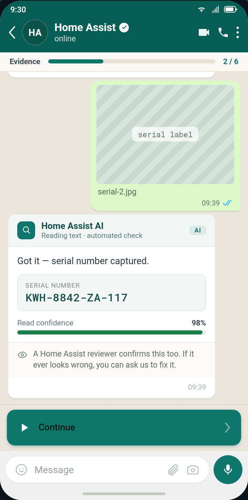
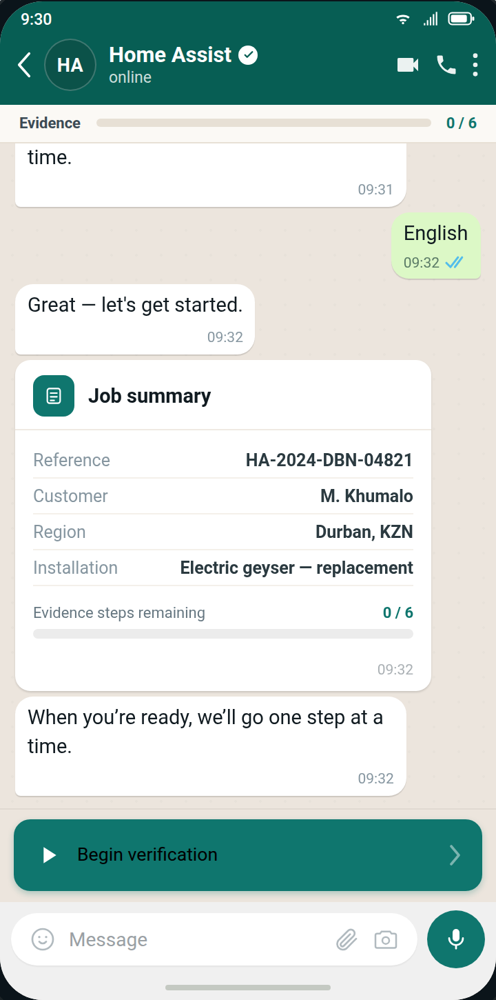
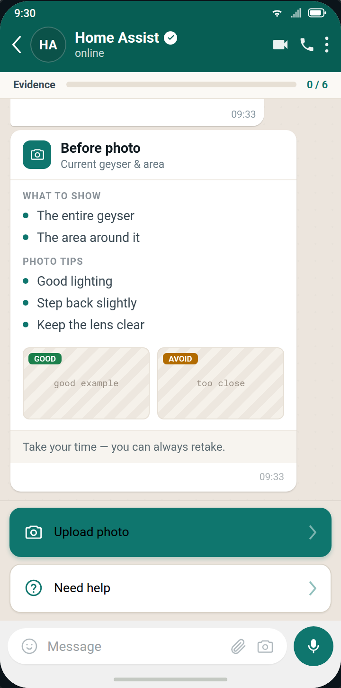
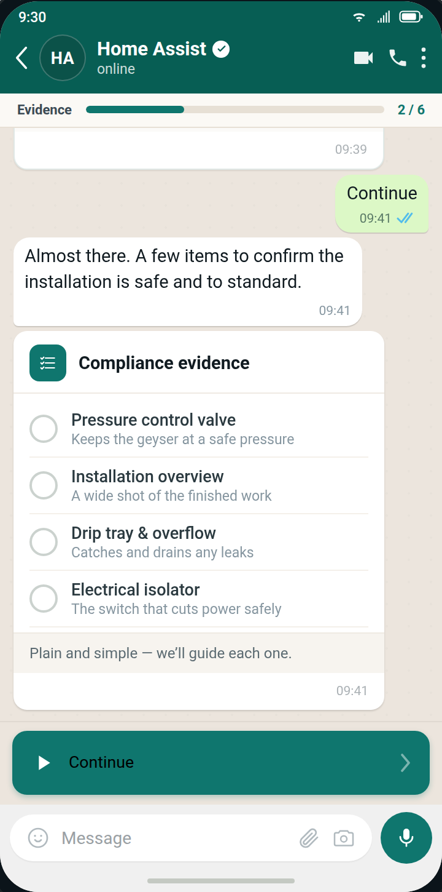
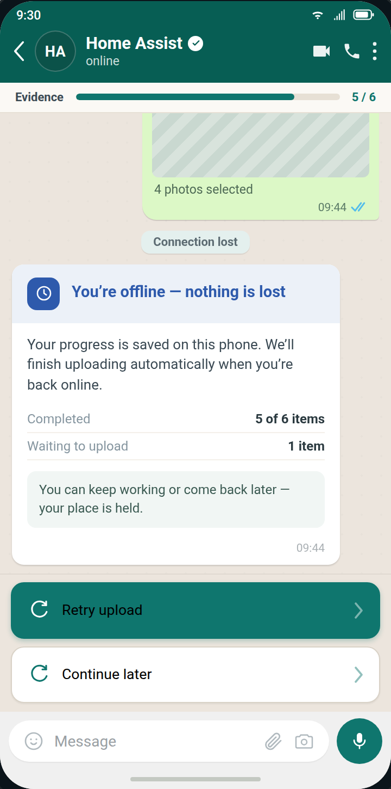
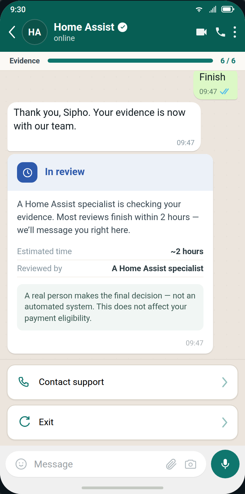
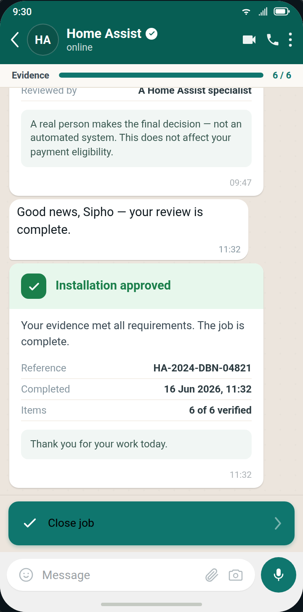
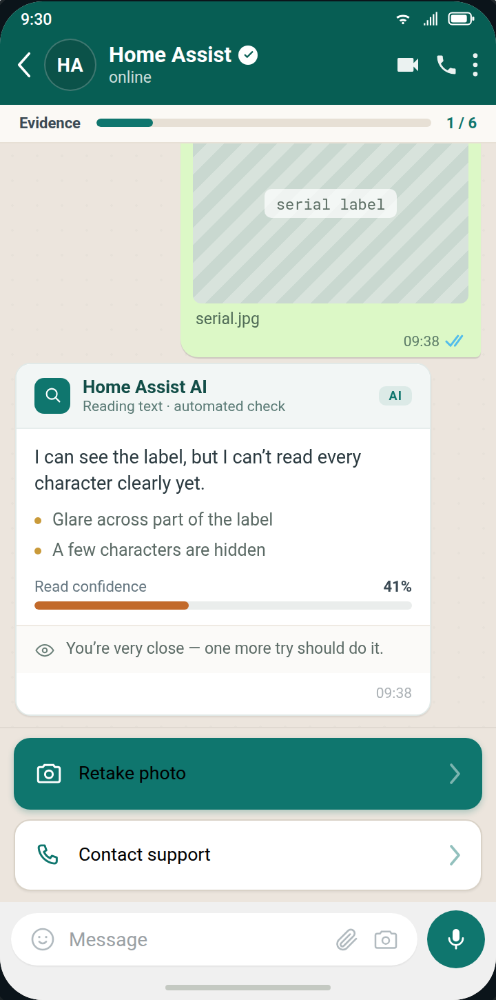

Speed over perfection
Every extra interaction costs a plumber money — cut friction before adding polish.
Santam · Home Assist · AI UX case study
How I helped Santam's Home Assist team turn a slow, trust-fragile claims process into a governed, explainable WhatsApp verification system — as AI UX Strategist across a four-phase enterprise engagement.

A plumber in a roof space, phone in one hand, asking the same thing every time: will I actually get paid for this?
Verification had to earn trust at the exact moment it was most fragile — on site, one-handed, on a bad signal.
01 · Business context
Home Assist sits inside Santam's claims chain: a homeowner's policy triggers a dispatch, an accredited plumber completes the job, and that job can't close — and the plumber can't get paid — until the work is verified. That verification has to satisfy three separate, sometimes competing interests at once: a reviewer checking compliance, a costing team protecting against leakage and fraud, and an executive layer that won't fund further build without proof the process holds up under governance scrutiny — POPIA, ISO, audit trail.
Heavy admin at intake, inconsistent photos at the evidence stage, slow decisions and manual cost validation at the back end. Every one was a symptom of the same root cause: nobody in the chain had a shared, trustworthy source of truth about what actually happened on site.
| Stakeholder | Primary goal | Primary fear |
|---|---|---|
| Plumber | Finish the job quickly and get paid | Rejection or payment delays |
| Operations | Reduce support burden | High call volume |
| Reviewer | Make accurate decisions | Missing critical evidence |
| Costing | Prevent leakage | Incorrect claims |
| Executives | Reduce total claim cost | Compliance failures |
02 · My role & how it was grounded
This came out of a structured service-design engagement run against the live business, not a research panel. I led current- and future-state journey mapping from workflow analysis and existing process documentation, built the stakeholder ecosystem map, and ran a full trust-breakdown analysis stakeholder by stakeholder before a single screen was designed.
Every material assumption then went through an 8-session stakeholder workshop program and was logged in a Decision Register against a named business owner before it was allowed into the design — nothing shipped on my judgment alone.
VR-001 — Mandatory evidence for standard geyser replacement: before photo, serial photo, and compliance photo required.
Owner: Vanessa · Design impact: updates the WhatsApp checklist flow · Technical impact: updates validation logic
That register — not a stack of transcripts — is the evidence base for this case study. A slower way to design, and a much harder one to get wrong in front of an executive committee.
03 · Design principles
Every extra interaction costs a plumber money — cut friction before adding polish.
Never say "Error." Say exactly what needs fixing and why.
Quick replies first, free text last — this is a one-handed, on-site tool.
Every message answers one question: "what does this mean for me and my pay?"
AI assists. Humans decide. Always — and always stated.
04 · From current state to a seven-screen experience
The future-state journey collapses a multi-call, multi-day process into a single conversation: claim → initiation → guided evidence capture → AI-assisted analysis → human review if required → cost validation, approval and reference number. In interaction design, that became seven discrete experiences.






05 · The screen the whole claim hinges on

The serial label is the photo the claim legally hinges on. The first attempt comes back at 41% — but the system doesn't say "Error." It names the exact problem: glare across part of the label, a few characters hidden — and reassures: "you're very close, one more try should do it."
The retake reaches 98%, the number is captured, and a line underneath keeps the human in frame: "a Home Assist reviewer confirms this too." Confidence is a colour bar, not a bare score — legible to a plumber on a ladder, defensible to a reviewer at a desk.
Design principle in action: push friction to the moment that needs it — the serial photo — and strip it everywhere else.
06 · Information architecture
Below the conversation sits a blueprint mapping what the plumber experiences against what the system and internal teams do at the same moment — the artifact that let engineering, operations and reviewers work from one model instead of three different pictures of "what the AI does."
Underpinning all of it: a single Job Record — the source of truth every role reads from (Job · Plumber · Property · Installation · Evidence · AI outputs · Review, costing & outcome).
07 · Design exploration
Every photo request routes through one reusable guidance card. I explored three directions before locking one in — the serial photo, with non-visual requirements a single image can't teach, decided it.
The photo spec itself came out of the workshop program, not a style guide: before photos need the whole geyser and environment; the serial label needs 15–20 cm distance, good lighting, label only; compliance photos are module-specific.
08 · AI UX strategy
Confidence thresholds and review triggers weren't a design decision I made alone — they were owned by Leon (AI Governance) and ratified in a dedicated workshop, because a threshold set too loose creates fraud exposure and one set too tight buries reviewers in false escalations. My job was translating that governance decision into an interaction: a reviewer decision tree that checks evidence completeness, then AI confidence, then routes to auto-approval or manual assessment — and an explainability layer that always answers three questions.
The recognised entity, in plain language — never a raw model output.
A number the reviewer can weigh — paired with the evidence, not hidden behind it.
The next action is always explicit. The AI proposes; a human disposes.
09 · Trust-breakdown analysis
I mapped where trust actually breaks for each stakeholder — as a specific trigger with a specific consequence — and designed a response to each one into the product, not into an FAQ.
| Stakeholder | Trigger | Consequence if unaddressed | Design response |
|---|---|---|---|
| Plumber | "Will I still get paid?" after a manual-review request | Calls operations / abandons the system | Explain why review happened, what's next, and the expected timeline |
| Operations | "Is this reducing calls?" amid high abandonment | Reverts to manual process | Visibility into abandoned jobs, escalations and support triggers |
| Reviewer | "Can I trust the AI?" after a false positive | AI recommendations ignored wholesale | Transparent confidence scores and explainable evidence checks |
| Costing | "Can I trust extracted data?" after incorrect OCR | Manual validation creeps back in | Side-by-side photo and extracted-text comparison |
| Executives | "Can we trust this operationally?" amid compliance uncertainty | Pilot-termination risk | Audit trails, oversight controls, governance checkpoints |
Every AI or reviewer outcome maps to an internal reason code and a plain-language WhatsApp message — the layer that keeps internal logic from ever leaking through as a cryptic error.
10 · Escalation & resilience
AI detects blur, WhatsApp guidance nudges "move closer," a retake is requested.
blur → guidance → retake → 3 fails → Human Assist queue
A claim exceeding expected norms trips an automatic manual-review flag.
exceeds norm → manual-review flag → costing validation
Treated as a first-class conversational state, not an error — progress saved locally.
signal lost → saved locally → resumes exactly where it left off
11 · Prototype & validation
The Phase 4 deliverable was built to five principles — trustworthy (the AI never appears autonomous), explainable (every output shows its rationale), enterprise-ready, human-centered and compliance-conscious — across four workspaces.
The plumber's seven-screen capture journey.
Evidence panel, explainability layer, decision workspace.
Active / stalled jobs, SLA bottlenecks.
OCR checks, warranty risk, export formatting.
It was demonstrated as a seven-act storyline for an executive audience — Field Reality → Guided Verification → AI Assistance → Human Oversight → Operational Efficiency → Financial Impact → Executive Outcomes.
Interactive Tap the quick replies inside the chat, or jump to any of the 17 screens from the index on the left.
12 · Business impact
Success for this phase wasn't a production metric — it was stakeholders concluding: "this is operationally feasible," "this aligns with governance requirements," "this could reduce total claim costs," "our people would actually use this." The design goals behind those conclusions, with space for the pilot's real numbers once reporting closes:
Real-time confidence feedback + a named fix instead of a delayed manual rejection
pilotCatching unreadable evidence on-site, before the technician leaves the job
pilotGoverned thresholds route only genuinely low-confidence cases to a human
pilotFewer rejection round-trips, end to end
pilotSelf-serve retry / offline handling instead of "my upload failed" calls
pilotPilot cells are placeholders for Santam's actual figures once shared — the design goals hold regardless of the final numbers.
13 · Reflection
At enterprise scale, most of "AI UX" work is facilitation and governance documentation, not screens. The decision register did more to earn trust than any interface polish could have.
Getting five stakeholder groups, each protecting something different, aligned on a single confidence threshold — one number that had to satisfy a plumber's need for fairness and an executive's need for auditability at the same time.
"Speed over perfection" and "audit trails, oversight, governance checkpoints" pull in opposite directions. The resolution: push friction to the moments that need it — the serial photo — and strip it everywhere else.
The reason-code language, with real plumbers, in all three languages — and the confidence thresholds against real fraud and rework data once pilot volume exists.
AI UX at enterprise scale isn't about making the AI look smart. It's about making its judgment legible enough that five stakeholders, each with something real to lose, are willing to trust it.